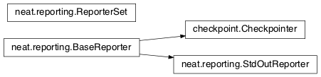

Module summaries¶
activations¶
attributes¶

- class
attributes.BaseAttribute(self, name)[source]¶Superclass for the type-specialized attribute subclasses.
- class
attributes.FloatAttribute(BaseAttribute)[source]¶Class for numeric attributes; includes code for configuration, creation, and mutation.
checkpoint¶
config¶
- class
config.ConfigParameter(self, name, value_type)[source]¶Does initial handling of a particular configuration parameter.
Parameters:
- name (str) – The name of the configuration parameter.
- value_type (str) – The type that the configuration parameter should be; must be one of str, int, bool, float, or list.
- class
config.Config(self, genome_type, reproduction_type, species_set_type, stagnation_type, filename)[source]¶A simple container for user-configurable parameters of NEAT. The four parameters ending in ``_type`` may be the defaults or user-provided objects, which must make available the methods `parse_config` and `write_config`, plus others depending on which object it is.
ctrnn¶
genes¶

- class
genes.BaseGene(self, key)[source]¶Handles functions shared by multiple types of genes (both node and connection), including crossover and calling mutation methods.
Parameters: key (int) – The gene identifier. For connection genes, genetic distances use the identifiers of the connected nodes, not the connection gene’s identifier.
genome¶

graphs¶
graphs.creates_cycle(connections, test)[source]¶Returns true if the addition of the "test" connection would create a cycle, assuming that no cycle already exists in the graph represented by "connections". Used to avoid recurrent networks when a pure feed-forward network is desired.
graphs.required_for_output(inputs, outputs, connections)[source]¶Collect the nodes whose state is required to compute the final network output(s).
Parameters:
- inputs (list(int)) – the input identifiers; it is assumed that the input identifier set and the node identifier set are disjoint.
- outputs (list(int)) – the output node identifiers; by convention, the output node ids are always the same as the output index.
- connections (list(list(int, int))) – list of (input, output) connections in the network; should only include enabled ones.
Returns: A list of layers, with each layer consisting of a set of identifiers.
Return type: list(set(int))
graphs.feed_forward_layers(inputs, outputs, connections)[source]¶Collect the layers whose members can be evaluated in parallel in a feed-forward network.
Parameters:
- inputs (list(int)) – the network input nodes.
- outputs (list(int)) – the output node identifiers.
- connections (list(list(int, int))) – list of (input, output) connections in the network; should only include enabled ones.
Returns: A list of layers, with each layer consisting of a set of node identifiers; only includes nodes returned by required_for_output.
Return type: list(set(int))
indexer¶
iznn¶

- class
iznn.IZNodeGene(BaseGene)[source]¶Contains attributes for the iznn node genes and determines genomic distance.
- class
iznn.IZGenome(DefaultGenome)[source]¶Contains the parse_config class method for iznn genome configuration.
- class
iznn.IZNeuron(self, bias, a, b, c, d, inputs)[source]¶Sets up and simulates the iznn nodes (neurons). TODO: Currently has some numerical stability problems; the time-step should be adjustable.
Parameters:
- bias (float) – The bias of the neuron.
- a (float) – The time scale of the recovery variable.
- b (float) – The sensitivity of the recovery variable.
- c (float) – The after-spike reset value of the membrane potential.
- d (float) – The after-spike reset of the recovery variable.
- inputs (list(list(int, float))) – A list of (input key, weight) pairs for incoming connections.
math_util¶
The softmax is computed as follows: \(\begin{equation}v_i = \exp(v_i) / s \text{where} s = \sum(\exp(v_0), \exp(v_1), \dotsc)\end{equation}\).
nn.feed_forward¶
- class
nn.feed_forward.FeedForwardNetwork(self, inputs, outputs, node_evals)[source]¶A straightforward feed-forward neural network NEAT implementation.
Parameters:
- inputs (list(int)) – The input keys (IDs).
- outputs (list(int)) – The output keys.
- node_evals (list(list(object))) – A list of node descriptions, with each node represented by a list.
nn.recurrent¶
- class
nn.recurrent.RecurrentNetwork(self, inputs, outputs, node_evals)[source]¶A recurrent (but otherwise straightforward) neural network NEAT implementation.
Parameters:
- inputs (list(int)) – The input keys (IDs).
- outputs (list(int)) – The output keys.
- node_evals (list(list(object))) – A list of node descriptions, with each node represented by a list.
reporting¶

- class
reporting.ReporterSet[source]¶Keeps track of the set of reporters and gives functions to dispatch them at appropriate points.